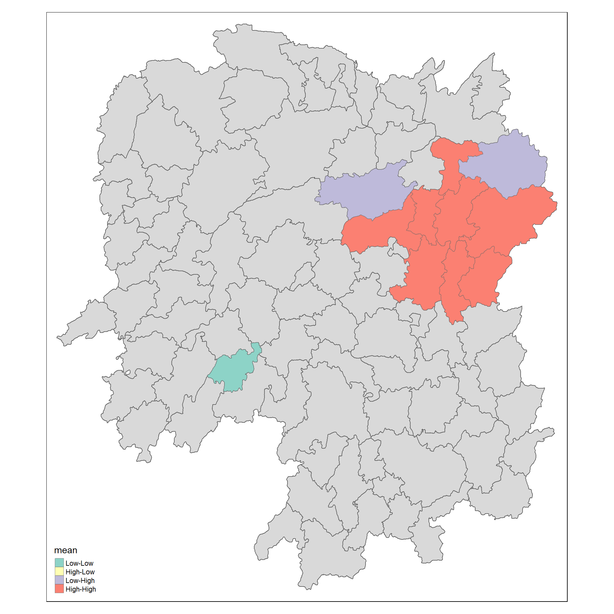
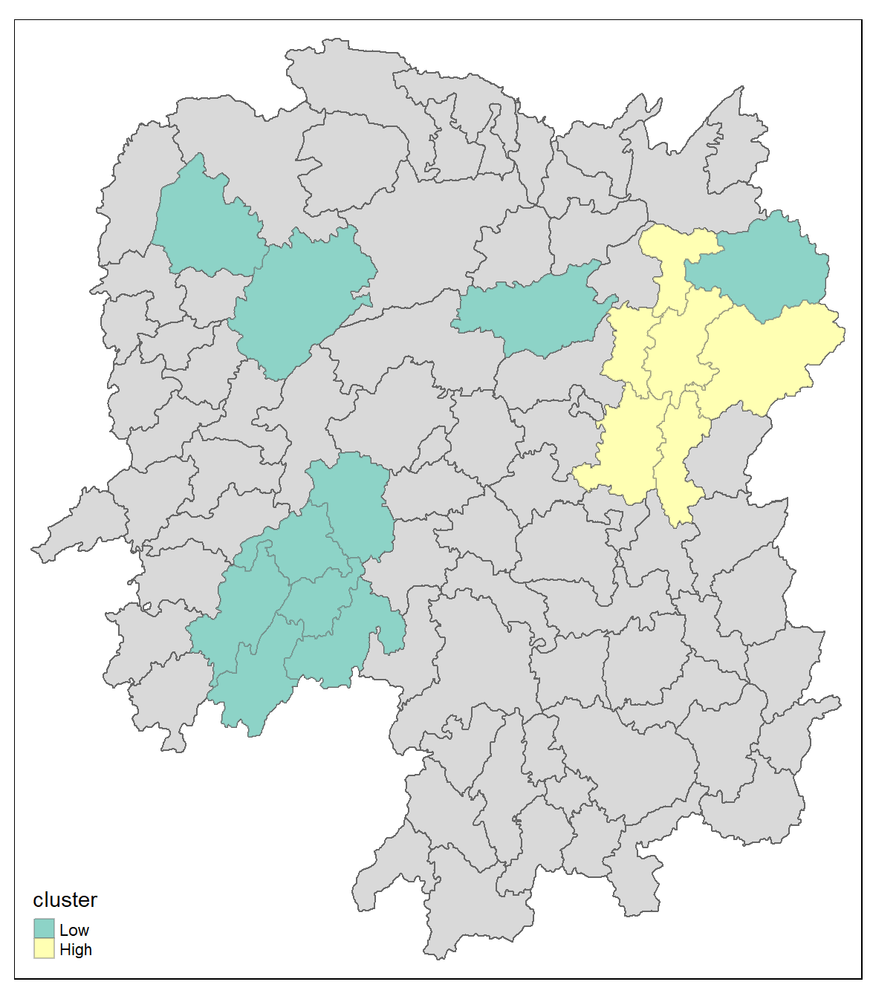

pacman::p_load(sf, sfdep, tmap, tidyverse)In-class Exercise 5: Global and Local Measures of Spatial Autocorrelation: sfdep methods
Content
- Introducing sfdep.
- sfdep creates an sf and tidyverse friendly interface to the package as well as introduces new functionality that is not present in spdep.
- sfdep utilizes list columns extensively to make this interface possible.”
Getting started
Installing and Loading the R Packages
Four R packages will be used for this in-class exercise, they are: sf, sfdep, tmap and tidyverse.
Using the steps you learned in previous lesson, install and load sf, tmap, sfdep and tidyverse packages into R environment.
The Data
For the purpose of this in-class exercise, the Hunan data sets will be used. There are two data sets in this use case, they are:
- Hunan, a geospatial data set in ESRI shapefile format, and
- Hunan_2012, an attribute data set in csv format.
Using the steps you learned in previous lesson, import Hunan shapefile into R environment as an sf data frame.
hunan <- st_read(dsn = "data/geospatial",
layer = "Hunan")Importing Attribute Table
Using the steps you learned in previous lesson, import Hunan_2012.csv into R environment as an tibble data frame.
hunan2012 <- read_csv("data/aspatial/Hunan_2012.csv")Combining both data frame by using left join
Using the steps you learned in previous lesson, combine the Hunan sf data frame and Hunan_2012 data frame. Ensure that the output is an sf data frame.
hunan_GDPPC <- left_join(hunan, hunan2012) %>%
select(1:4, 7, 15)
Note
For the purpose of this exercise, we only retain column 1 to 4, column 7 and column 15. You should examine the output sf data.frame to learn know what are these fields.
Important
In order to retain the geospatial properties, the left data frame must the sf data.frame (i.e. hunan)
Plotting a choropleth map
Using the steps you learned in previous lesson, plot a choropleth map showing the distribution of GDPPC of Hunan Province.
tmap_mode("plot")
tm_shape(hunan_GDPPC) +
tm_fill("GDPPC",
style = "quantile",
palette = "Blues",
title = "GDPPC") +
tm_layout(main.title = "Distribution of GDP per capita by county, Hunan Province",
main.title.position = "center",
main.title.size = 1.2,
legend.height = 0.45,
legend.width = 0.35,
frame = TRUE) +
tm_borders(alpha = 0.5) +
tm_compass(type="8star", size = 2) +
tm_scale_bar() +
tm_grid(alpha =0.2)Global Measures of Spatial Association
Step 1: Deriving Queen’s contiguity weights: sfdep methods
wm_q <- hunan_GDPPC %>%
mutate(nb = st_contiguity(geometry),
wt = st_weights(nb,
style = "W"),
.before = 1) Notice that st_weights() provides tree arguments, they are:
- nb: A neighbor list object as created by st_neighbors().
- style: Default “W” for row standardized weights. This value can also be “B”, “C”, “U”, “minmax”, and “S”. B is the basic binary coding, W is row standardised (sums over all links to n), C is globally standardised (sums over all links to n), U is equal to C divided by the number of neighbours (sums over all links to unity), while S is the variance-stabilizing coding scheme proposed by Tiefelsdorf et al. 1999, p. 167-168 (sums over all links to n).
- allow_zero: If TRUE, assigns zero as lagged value to zone without neighbors.
The wm_q
wm_qComputing Global Moran’ I
In the code chunk below, global_moran() function is used to compute the Moran’s I value. Different from spdep package, the output is a tibble data.frame.
moranI <- global_moran(wm_q$GDPPC,
wm_q$nb,
wm_q$wt)
glimpse(moranI)Performing Global Moran’sI test
In general, Moran’s I test will be performed instead of just computing the Moran’s I statistics. With sfdep package, Moran’s I test can be performed by using global_moran_test() as shown in the code chunk below.
global_moran_test(wm_q$GDPPC,
wm_q$nb,
wm_q$wt)
Tip
- The default for
alternativeargument is “two.sided”. Other supported arguments are “greater” or “less”. randomization, and - By default the
randomizationargument is TRUE. If FALSE, under the assumption of normality.
Performing Global Moran’I permutation test
In practice, Monte carlo simulation should be used to perform the statistical test. For sfdep, it is supported by globel_moran_perm()
It is always a good practice to use set.seed() before performing simulation. This is to ensure that the computation is reproducible.
set.seed(1234)Next, global_moran_perm() is used to perform Monte Carlo simulation.
global_moran_perm(wm_q$GDPPC,
wm_q$nb,
wm_q$wt,
nsim = 99)The statistical report on previous tab shows that the p-value is smaller than alpha value of 0.05. Hence, we have enough statistical evidence to reject the null hypothesis that the spatial distribution of GPD per capita are resemble random distribution (i.e. independent from spatial). Because the Moran’s I statistics is greater than 0. We can infer that the spatial distribution shows sign of clustering.
Reminder
The numbers of simulation is alway equal to nsim + 1. This mean in nsim = 99. This mean 100 simulation will be performed.
LISA map
LISA map is a categorical map showing outliers and clusters. There are two types of outliers namely: High-Low and Low-High outliers. Likewise, there are two type of clusters namely: High-High and Low-Low cluaters. In fact, LISA map is an interpreted map by combining local Moran’s I of geographical areas and their respective p-values.

Computing local Moran’s I
In this section, you will learn how to compute Local Moran’s I of GDPPC at county level by using local_moran() of sfdep package.
lisa <- wm_q %>%
mutate(local_moran = local_moran(
GDPPC, nb, wt, nsim = 99),
.before = 1) %>%
unnest(local_moran)The output of local_moran() is a sf data.frame containing the columns ii, eii, var_ii, z_ii, p_ii, p_ii_sim, and p_folded_sim.
- ii: local moran statistic
- eii: expectation of local moran statistic; for localmoran_permthe permutation sample means
- var_ii: variance of local moran statistic; for localmoran_permthe permutation sample standard deviations
- z_ii: standard deviate of local moran statistic; for localmoran_perm based on permutation sample means and standard deviations p_ii: p-value of local moran statistic using pnorm(); for localmoran_perm using standard deviatse based on permutation sample means and standard deviations p_ii_sim: For
localmoran_perm(),rank()andpunif()of observed statistic rank for [0, 1] p-values usingalternative=-p_folded_sim: the simulation folded [0, 0.5] range ranked p-value (based on https://github.com/pysal/esda/blob/4a63e0b5df1e754b17b5f1205b cadcbecc5e061/esda/crand.py#L211-L213) - skewness: For
localmoran_perm, the output of e1071::skewness() for the permutation samples underlying the standard deviates - kurtosis: For
localmoran_perm, the output of e1071::kurtosis() for the permutation samples underlying the standard deviates.
Visualising local Moran’s I
In this code chunk below, tmap functions are used prepare a choropleth map by using value in the ii field.
tmap_mode("plot")
tm_shape(lisa) +
tm_fill("ii") +
tm_borders(alpha = 0.5) +
tm_view(set.zoom.limits = c(6,8)) +
tm_layout(
main.title = "local Moran's I of GDPPC",
main.title.size = 2)Visualising p-value of local Moran’s I
In the code chunk below, tmap functions are used prepare a choropleth map by using value in the p_ii_sim field.
tmap_mode("plot")
tm_shape(lisa) +
tm_fill("p_ii_sim") +
tm_borders(alpha = 0.5) +
tm_layout(main.title = "p-value of local Moran's I",
main.title.size = 2)
Warning
For p-values, the appropriate classification should be 0.001, 0.01, 0.05 and not significant instead of using default classification scheme.
Visualising local Moran’s I and p-value
For effective comparison, it will be better for us to plot both maps next to each other.
tmap_mode("plot")
map1 <- tm_shape(lisa) +
tm_fill("ii") +
tm_borders(alpha = 0.5) +
tm_view(set.zoom.limits = c(6,8)) +
tm_layout(main.title = "local Moran's I of GDPPC",
main.title.size = 0.8)
map2 <- tm_shape(lisa) +
tm_fill("p_ii",
breaks = c(0, 0.001, 0.01, 0.05, 1),
labels = c("0.001", "0.01", "0.05", "Not sig")) +
tm_borders(alpha = 0.5) +
tm_layout(main.title = "p-value of local Moran's I",
main.title.size = 0.8)
tmap_arrange(map1, map2, ncol = 2)Plotting LISA map
In lisa sf data.frame, we can find three fields contain the LISA categories. They are mean, median and pysal. In general, classification in mean will be used as shown in the code chunk below.
lisa_sig <- lisa %>%
filter(p_ii_sim < 0.05)
tmap_mode("plot")
tm_shape(lisa) +
tm_polygons() +
tm_borders(alpha = 0.5) +
tm_shape(lisa_sig) +
tm_fill("mean") +
tm_borders(alpha = 0.4)Hot Spot and Cold Spot Area Analysis (HCSA)
HCSA uses spatial weights to identify locations of statistically significant hot spots and cold spots in an spatially weighted attribute that are in proximity to one another based on a calculated distance. The analysis groups features when similar high (hot) or low (cold) values are found in a cluster. The polygon features usually represent administration boundaries or a custom grid structure.

Computing local Gi* statistics
As usual, we will need to derive a spatial weight matrix before we can compute local Gi* statistics. Code chunk below will be used to derive a spatial weight matrix by using sfdep functions and tidyverse approach.
wm_idw <- hunan_GDPPC %>%
mutate(nb = include_self(
st_contiguity(geometry)),
wts = st_inverse_distance(nb,
geometry,
scale = 1,
alpha = 1),
.before = 1)
Note
- Gi* and local Gi* are distance-based spatial statistics. Hence, distance methods instead of contiguity methods should be used to derive the spatial weight matrix.
- Since we are going to compute Gi* statistics,
include_self()is used.
Computing local Gi* statistics
Now, we will compute the local Gi* by using the code chunk below.
HCSA <- wm_idw %>%
mutate(local_Gi = local_gstar_perm(
GDPPC, nb, wts, nsim = 99),
.before = 1) %>%
unnest(local_Gi)
HCSAVisualising Gi*
In the code chunk below, tmap functions are used to plot the local Gi* (i.e. gi_star) at the province level.
tmap_mode("plot")
tm_shape(HCSA) +
tm_fill("gi_star") +
tm_borders(alpha = 0.5) +
tm_view(set.zoom.limits = c(6,8))Visualising p-value of HCSA
In the code chunk below, tmap functions are used to plot the p-values of local Gi* (i.e. p_sim) at the province level.
tmap_mode("plot")
tm_shape(HCSA) +
tm_fill("p_sim") +
tm_borders(alpha = 0.5)Visuaising local HCSA
For effective comparison, you can plot both maps next to each other as shown below.
tmap_mode("plot")
map1 <- tm_shape(HCSA) +
tm_fill("gi_star") +
tm_borders(alpha = 0.5) +
tm_view(set.zoom.limits = c(6,8)) +
tm_layout(main.title = "Gi* of GDPPC",
main.title.size = 0.8)
map2 <- tm_shape(HCSA) +
tm_fill("p_value",
breaks = c(0, 0.001, 0.01, 0.05, 1),
labels = c("0.001", "0.01", "0.05", "Not sig")) +
tm_borders(alpha = 0.5) +
tm_layout(main.title = "p-value of Gi*",
main.title.size = 0.8)
tmap_arrange(map1, map2, ncol = 2)Visualising hot spot and cold spot areas
Now, we are ready to plot the significant (i.e. p-values less than 0.05) hot spot and cold spot areas by using appropriate tmap functions as shown below.
HCSA_sig <- HCSA %>%
filter(p_sim < 0.05)
tmap_mode("plot")
tm_shape(HCSA) +
tm_polygons() +
tm_borders(alpha = 0.5) +
tm_shape(HCSA_sig) +
tm_fill("cluster") +
tm_borders(alpha = 0.4)
Note
Figure above reveals that there is one hot spot area and two cold spot areas. Interestingly, the hot spot areas coincide with the High-high cluster identifies by using local Moran’s I method in the earlier sub-section.